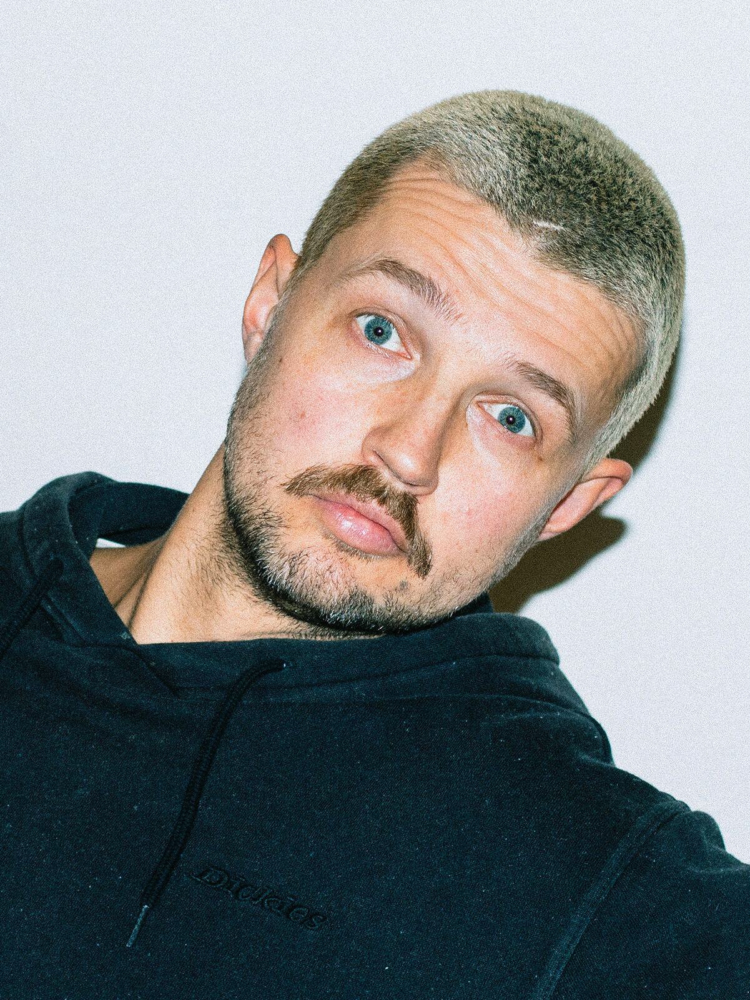

Christian Neitzel is a Vienna-based editorial portrait and fashion photographer. The former graphic designer took one too many candid snaps of friends at parties, and got obsessed. He still loves a tight comp, even tighter typography and a sneaky shot capturing unadulterated joy.
Known to be virtually imperturbable even under pressure, he naturally makes people feel at ease, and is most interested in the moment a subject stops performing.
Available in Vienna and worldwide.